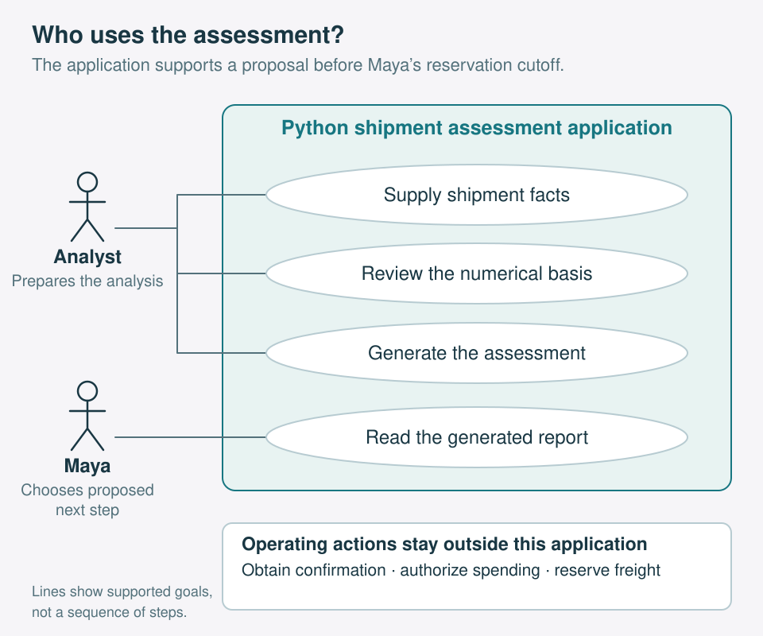
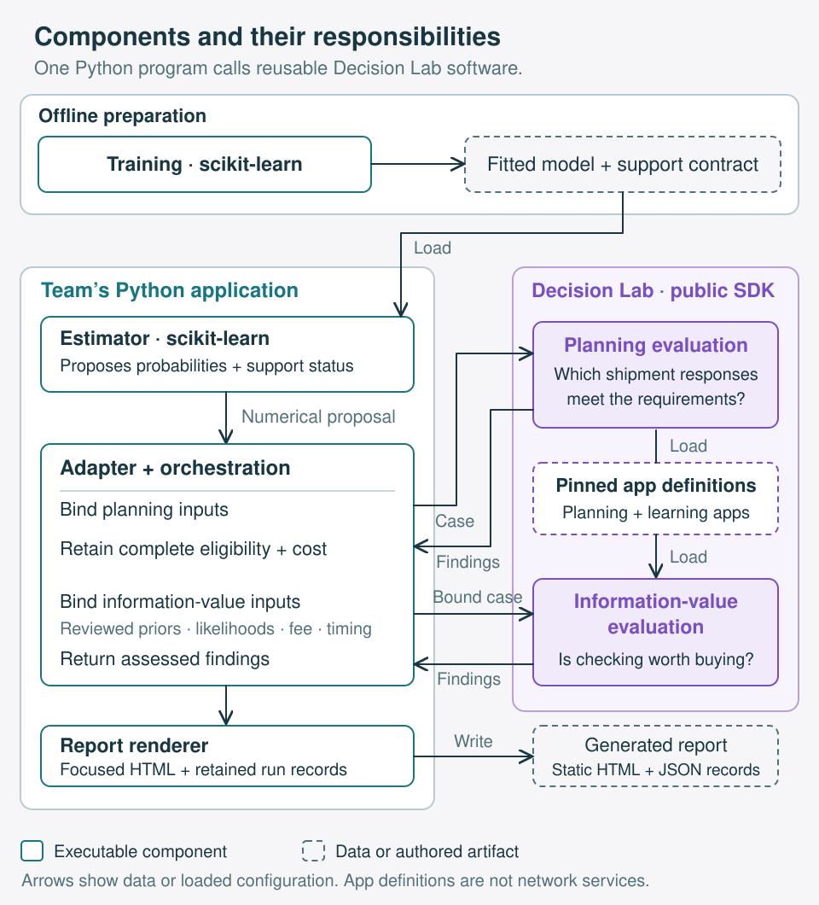
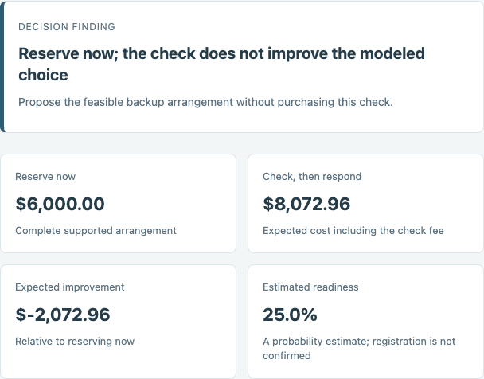
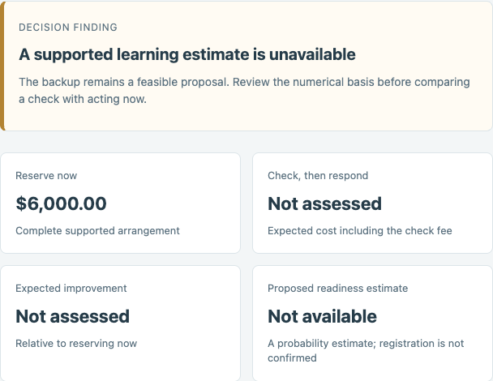

Maya’s analyst works in Python. The team has shipment history, a scikit-learn model and a question to answer before the noon reservation cutoff: should Maya buy a registration check before choosing freight? This example connects that Python model to Decision Lab and returns the findings to a report built by the same Python application.
Backup meets the recorded shipment requirements for $6,000. Direct costs $4,000 but needs current, correctly scoped registration confirmation. The model estimates the chance of registration; the team also needs to account for the check’s fee, the time to respond and which complete shipment arrangements remain available.
The complete Python integration includes the estimator, input adapter, pinned Decision Lab apps and report code. Maya, the history and all amounts are fictional. The screenshots show the sample’s actual generated reports.
Help Maya decide before the cutoff.
The analyst prepares the shipment inputs, reviews the model’s numerical basis and generates a comparison. Maya uses its report to decide which proposal to put forward: buy the check and retain a fallback, or reserve Backup now. The application supports that choice; responsible people obtain the actual confirmation, authorize spending and arrange freight.


One Python application connects prediction and decision.
The developer could write the shipment requirements, check-and-response comparison and report contracts alongside the model. In this integration, the team keeps its Python data science code and presentation while reusing Decision Lab’s authored planning and learning assessments.


The adapter is the connection between the parts. It calls the public decision_lab package, checks the planning findings and binds them into the information-value assessment alongside the numerical estimates. The pinned app definitions supply the requirements and comparison rules; the Python report renderer presents the returned findings.
The estimate and the decision answer different questions. Machine learning estimates registration from history. A commitment assessment establishes which complete shipment responses meet the recorded requirements. A learning assessment compares the check and its possible responses with the best supported outside option: reserve Backup now. This is the composition of assessment patterns that the Python application connects through the SDK. The estimator stays in Python; the authored apps supply the planning and information-value rules.
Keep the machine learning model in Python.
The sample trains a standardized logistic regression model with scikit-learn and calibrates its scores on a separate chronological partition. At assessment time, the fitted model supplies a registration probability through ordinary Python calls:
def calibrated_probabilities(bundle: dict[str, Any], frame: pd.DataFrame) -> np.ndarray:
scores = bundle["classifier"].decision_function(frame).reshape(-1, 1)
return bundle["calibrator"].predict_proba(scores)[:, 1]The four features describe portal-listing age, prior shipments, time since a scope change and open setup tasks. For the worked case, the model proposes 24.96%. Historical check records separately supply the frequencies of confirmation and no usable result. The model and these estimates remain in the Python application; they do not need to be rewritten as Decision Lab rules.
The estimator also returns provenance and applicability information. An unsupported feature value withholds a usable estimate. Its supported flag means the sample’s checks passed; real use still needs an appropriate population and validated historical records.
Bind the estimates to Decision Lab’s inputs.
The adapter places the proposed registration probability into the information-value app’s declared states:
probability = proposal["probabilityRegistered"]
inputs.update(id=f"{business['id']}-learning", currentTime=parameters["currentTime"],
cashBudget=parameters["cashLimit"])
inputs["probabilityBasis"] = {"source": "Proposed model basis " + lab.hashing.canonical_hash(proposal),
"scope": inputs["scope"]}
inputs["priors"] = [{"state": "registered", "probability": probability},
{"state": "not_registered", "probability": 1 - probability}]
inputs["acceptedFacts"] = []Here probability comes from the Python proposal. The adapter also supplies the check’s fee, duration and report likelihoods. It retains the authored meanings of registered, not_registered and an inconclusive report. The probability is a numerical premise; actual registration confirmation remains a separate requirement for Direct.
Planning contributes another part of the input: which complete arrangements meet the timing, capacity, expense, cash and recorded-permission conditions when reserving now or responding after the check. The adapter carries those findings into the information-value assessment, including their retained source references. Its candidates now mean a check together with responses to its possible reports, rather than another freight quote. Their expected complete expense is compared with the supported reserve-now alternative.
Call Decision Lab through the Python SDK.
The application opens its pinned planning and learning packages with lab.apps.open. A DecisionLab instance then evaluates the authored apps through the same public Python call:
run = lab.run(app=app, case=inputs, timeout_ms=30_000,
run_id=f"{business['id'].lower()}-{tag}", created_at=business["asOf"])- Assess the shipment responses. Run planning for reserving now and for acting after the check. Require complete findings before using eligibility and costs downstream.
- Bind the information-value case. Combine those findings with the proposed probabilities, report likelihoods, check fee and response time.
- Assess whether checking is worth buying. When the numerical basis is supported and accepted under the sample’s policy, run the learning app. Return its assessment and complete reports to Python.
If the estimate is unsupported or its basis awaits review, the application retains the planning findings and leaves the information-value comparison unassessed. A different Python estimator could supply the same declared numerical inputs after its meanings and applicability are checked.
Check the planning result before using it as a premise
Finishing execution and establishing a complete planning assessment are separate checks. The sample resolves the native assessment before passing operating eligibility downstream:
def resolve_planning(lab: DecisionLab, run: dict) -> dict:
result = lab.commitment.resolve_commitment_assessment(run["assessment"], run["report"])
if not lab.commitment.is_assessment_complete(result):
raise ValueError("A complete current planning assessment is required for this handoff.")
return resultestimate, learning_case and the surrounding orchestration are sample application functions. lab.run, lab.apps.open and the commitment assessment helpers are public SDK operations. The pinned source shows their complete context.
Use the same model with a different decision context.
The Python application renders the returned findings as a business report. With a timely $200 check, it reports $5,772.96 expected complete cost, including the check fee, against the supported $6,000 fallback now. The conditional expected improvement is $227.04.
Change only the fee to $2,500. The model’s features and numerical proposal remain unchanged. Decision Lab now prefers the $6,000 fallback because checking would cost $8,072.96 in expectation:
Shared basis. The same fitted Python model, features and numerical proposal feed the same pinned Decision Lab planning and learning apps. Shipment arrangements, recorded permissions, expense and cash boundaries, and the noon reservation cutoff remain unchanged.
What changes. The Python application supplies a different check fee: $200 or $2,500. The model inputs and the 10:30 a.m. response-ready time stay fixed. Case IDs and titles label the separate scenarios.
A $200 check
Checking has $227.04 of expected improvement.
- Check fee
- $200
- Response ready
- 10:30 a.m.
- Expected complete cost
- $5,772.96

Maya can put forward the timely check, retaining Backup if it supplies no usable registration confirmation.
A $2,500 check
Reserving Backup now is preferred.
- Check fee
- $2,500
- Response ready
- 10:30 a.m.
- Expected complete cost
- $8,072.96


The information can still affect the route, but its higher price exceeds the expected improvement. Maya can propose the supported $6,000 fallback now.
What this means for the decision. The Python model supplies the same numerical premises. Decision Lab evaluates the changed fee against the available responses and returns a different recommendation to the Python application.
The same registration estimate therefore supports different choices because the check’s value depends on its cost and the responses still available. More information is useful here only when its modeled benefit exceeds its complete expense relative to acting now. Changing the check price or duration needs no retraining of this model; changing a shipment requirement belongs in the authored app, and changing the estimator’s intended population needs its own model review.
| Changed condition | Integration behavior |
|---|---|
| The $200 check and response are ready at 3 p.m. | The planning and learning assessments retain the noon cutoff. Checking leaves no complete response in time; the report proposes Backup now. |
| Current features fall outside the estimator’s support | Python withholds a usable estimate and leaves learning value unassessed. The independent $6,000 planning finding remains available. |
Inspect an unsupported estimate


Open the retained report to inspect why the estimate was withheld. Missing support is preserved explicitly rather than replaced with a zero probability.
Bring the findings back into your own application.
Maya’s analyst can now give her a report that connects the model’s estimate to the shipment options, cost and cutoff. Open the actual Python report to inspect its concise finding, possible responses and expandable model and calculation details. The same application retains complete SDK runs for another interface or further analysis.
Maya can propose the timely check under the accepted numerical assumptions. The report also makes the downside clear: a valid positive confirmation can enable Direct at $4,200 including the check; otherwise Backup costs $6,200 including the check. The estimated chance of a usable positive report is about 21.35%, below the registration estimate because a check can be inconclusive. These are prospective findings, with purchasing and reservation left to the responsible owners.
The learning-before-commitment decision pattern organizes the overall approach. Its supporting planning assessment establishes available responses; the learning assessment compares their modeled value with acting now. Python supplies the estimator, orchestration and team interface. The complete sample repository shows the training code, adapter, authored apps and report together.